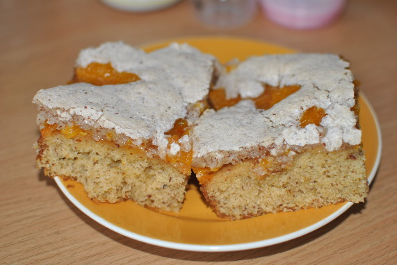

Mandel-Grießkuchen

- Zubereitung: ca. 35 Minuten
- Backen: ca. 45 Minuten
- Für 1 Backblech
Zutaten
Für den Teig
- 200 g gemahlene Mandeln
- 250 g weiche Butter
- 250 g Zucker
- 4 Eier (Größe M)
- 250 g Mehl
- 200 g Weichweizen-Grieß
- 1 Päckchen Backpulver
- 200 ml Milch
- Saft und abgeriebene Schale einer Orange
Für die Makronenmasse
- 4 Eiweiß
- 200 g Zucker
- 150 g gemahlene Mandeln
Ausserdem
- 2 Dosen Mandarin-Orangen (je 175 g Abtropfgewicht)
- 1 Glas Orangenmarmelade (300 g)
Zubereitung
- Den Backofen auf 180° Celsius (Umluft: 160° Celsius) vorheizen. Die Mandeln in einer Pfanne ohne Fett anrösten und abkühlen lassen.
- Butter und Zucker schaumig rühren. Die Eier einzeln unterrühren. Mehl, Mandeln, Grieß und Backpulver mischen. Mit Milch und Organgensaft (ca. 100 ml) und -schale unter die Butter-Eier-Masse rühren. Teig auf ein mit Backpapier belegtes Backblech
streichen und etwa 30 Minuten im Ofen backen.
- Inzwischen für die Makronenmasse die Eiweiße steif schlagen. Zucker dabei nach und nach einrieseln lassen und weiterschlagen. Mandeln unterheben. Die Mandarin-Orangen abtropfen lassen. Die Marmelade erwärmen, Mandarinen darunter rühren. Orangenmasse
auf den heißen Grießteig streichen. Makronenmasse in einen Spritzbeutel geben und gitterartig auf den Kuchen spritzen. Den Kuchen im Ofen weitere 15 Minuten backen.